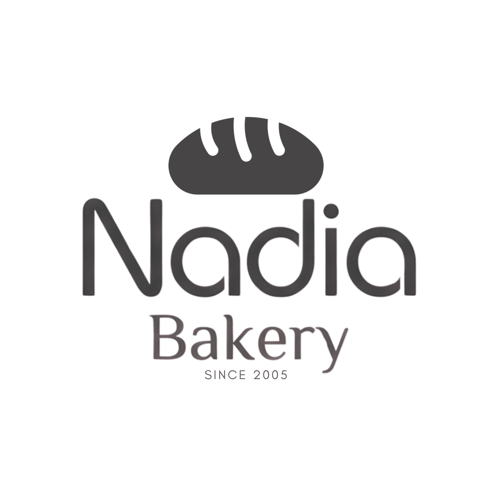

BAKED IN SUKABUMI · SINCE 2005
Yang hangat
selalu punya
cerita.
Roti, roti kering, dan brownies rumahan untuk momen kecil yang terasa istimewa.
Lihat yang manis ↓Klik Roti Nadia — dia tidak pemalu.

CERITA NADIA
Dari dapur kecil,
untuk meja makan
yang ramai.
Sejak 2005, Nadia Bakery membuat sajian rumahan yang akrab di lidah. Dipanggang dengan perhatian, dikemas dengan rapi, lalu dikirim untuk menemani kumpul keluarga, waktu istirahat, dan hadiah sederhana.
Ikuti keseharian dapur Nadia ↗YANG SEDANG HANGAT
Kenalan dengan
Brownis Nadia.
Tiga rasa dalam satu cerita: coklat, mocca, dan pandan. Lembut, legit, dan mudah dibagi.
PILIH KEMASANMU
Manisnya pas.
Harganya jelas.
TIGA RASA · SATU BOX
Pandan
Aromatik, ringan, dan lembut. Rasa hijau favorit yang selalu bikin ingin satu potong lagi.
AROMA PANDAN · TABURAN WIJEN
DARI LAYAR KE MEJA
Tiga langkah.
Lalu, tinggal nikmati.
- 01
Pilih
Tentukan produk, rasa, dan kemasan yang kamu mau.
- 02
Chat
Kirim pesan lewat WhatsApp untuk cek stok dan detail pesanan.
- 03
Nikmati
Konfirmasi pembayaran serta pengambilan atau pengiriman.
SAY HELLO
Ada yang bisa
kami panggang?
Kami siap membantu pesanan harian, teman kumpul keluarga, atau bingkisan sederhana.